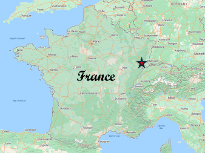

Welcome to: "I'd Rather Be in France!"
My name is Thomas, and as you can tell from the title of this site,
I love traveling to France, and I visit this extraordinary country as often as possible.
The goal of this site is to share the many reasons “why” I fell in love with France,
the French language, and the history of a country that was once a part of the Roman Empire.
I have traveled to France a dozen times in the past 20 years, spent months in
French Language immersion schools, and explored most of the regions in France.

Family Origins
For generations, family members believed that the family roots were, in fact, German.
On the ‘Family Origins’ page, you will discover the adventure which carried my uncle
Richard to trace the family history from southern Minnesota all the way back to Alsace
in the eastern part of France.
It is his discovery that our family heritage is French,
and not German, that commenced my decades long journey to visit France, and eventually,
to begin learning the most beautiful language on earth.
Exploring France
The ’Exploring France’ page will share my explorations of the many diverse,
and very different regions of France.
During my visits, I have developed an intense interest in the history of
the Roman Empire’s occupation of the land, then called Gaul.
Throughout southern France there are hundreds of historic sites
with many well-preserved Roman arenas, temples, bridges, baths, and aqueducts.
And then there are the numerous Gothic Churches and Chateau, with one being more
beautiful than the next.
Learning French
I will also share with you my journey to learn the beautiful French language.
There are many language apps available today that try to convince you how very
easy it is to learn another language. That you can learn a language in a matter of months,
just by using there method. I can reasonably assure you that to communicate effectively
in another language takes years of dedication and hard work.
I've spent months living and learning in France, in French immersion schools, and
continue in weekly French conversation classes. It's a life long persuit!